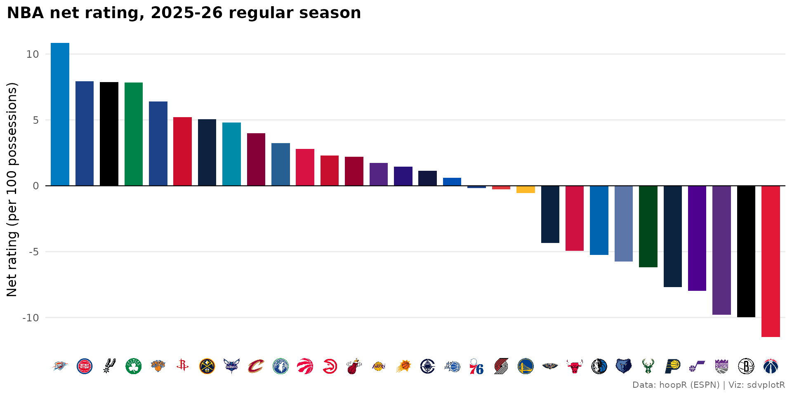
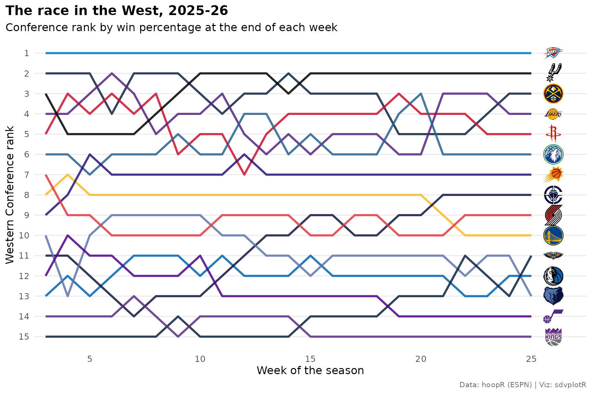
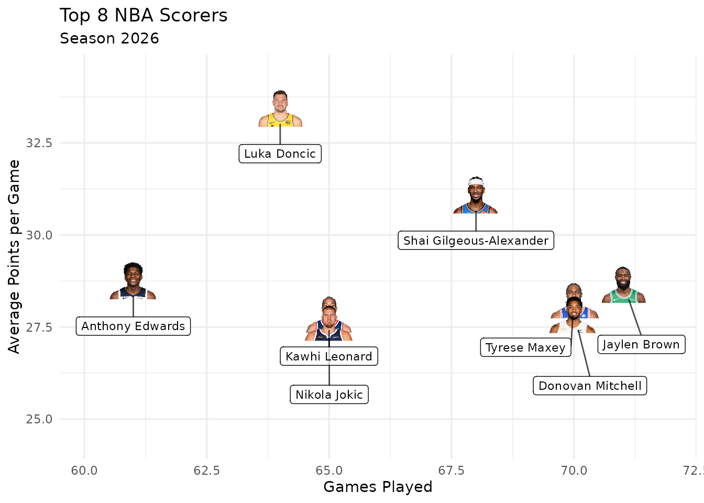
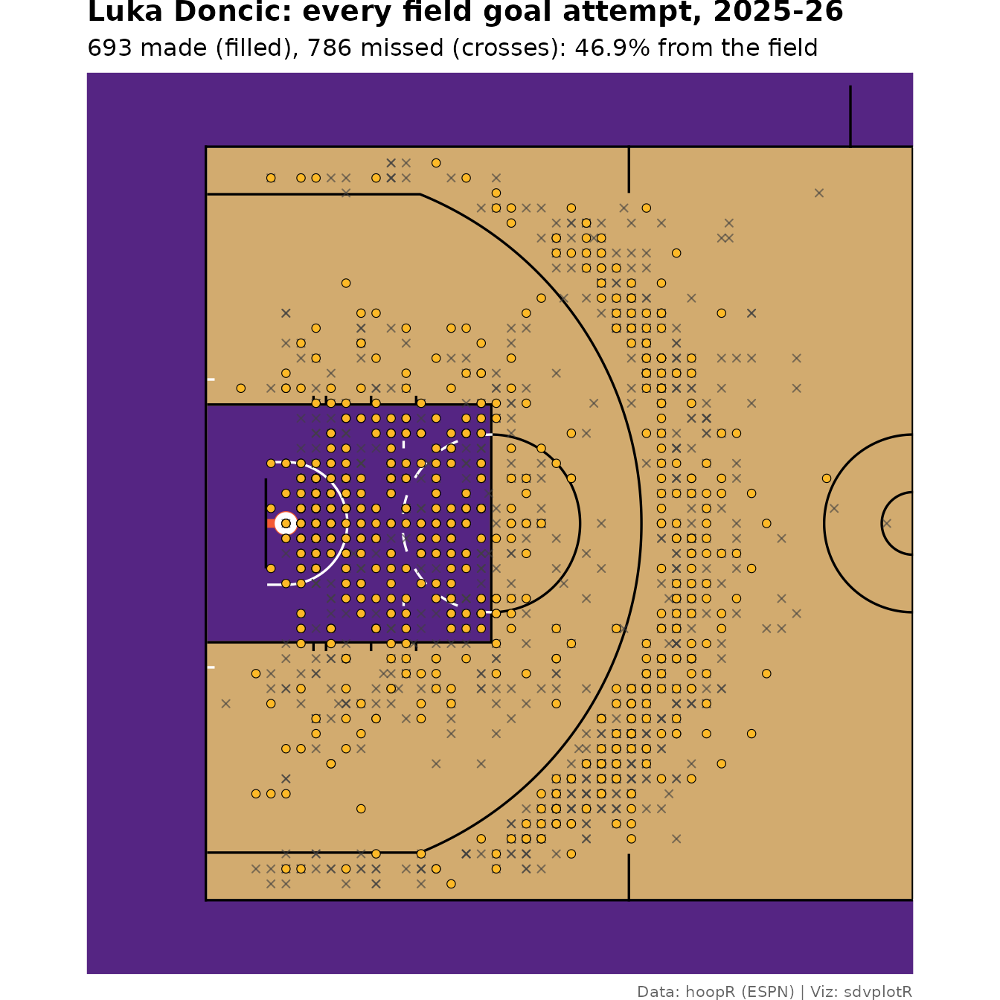
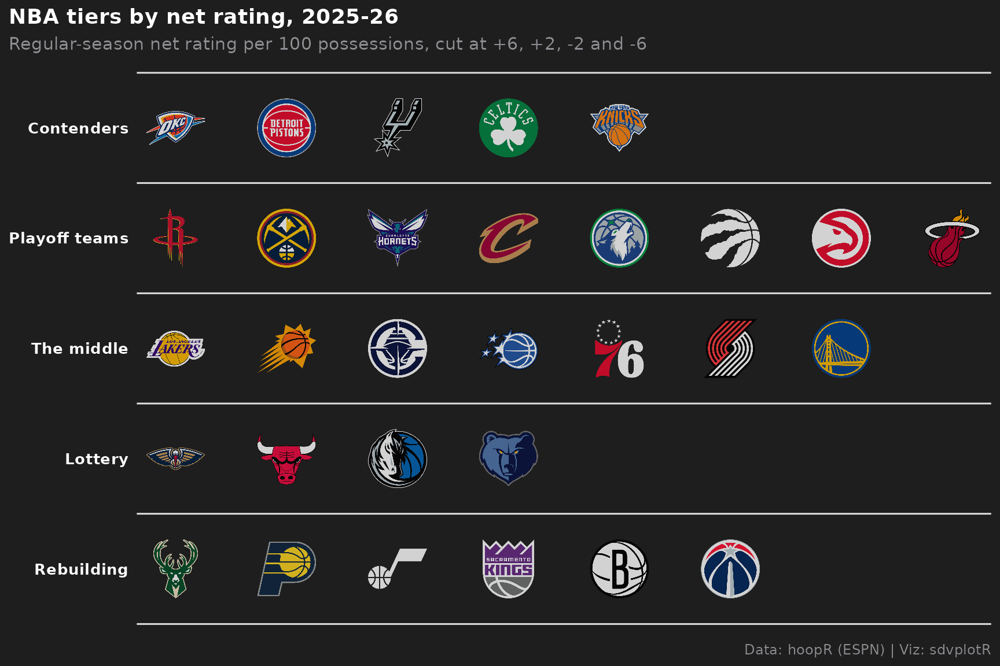
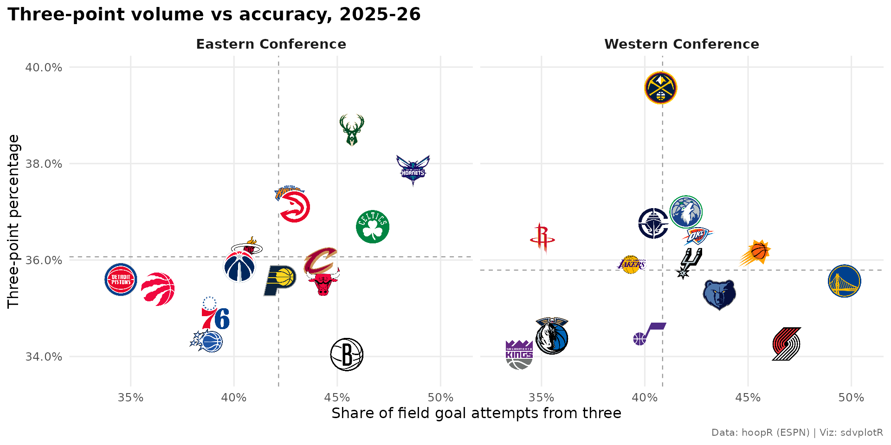
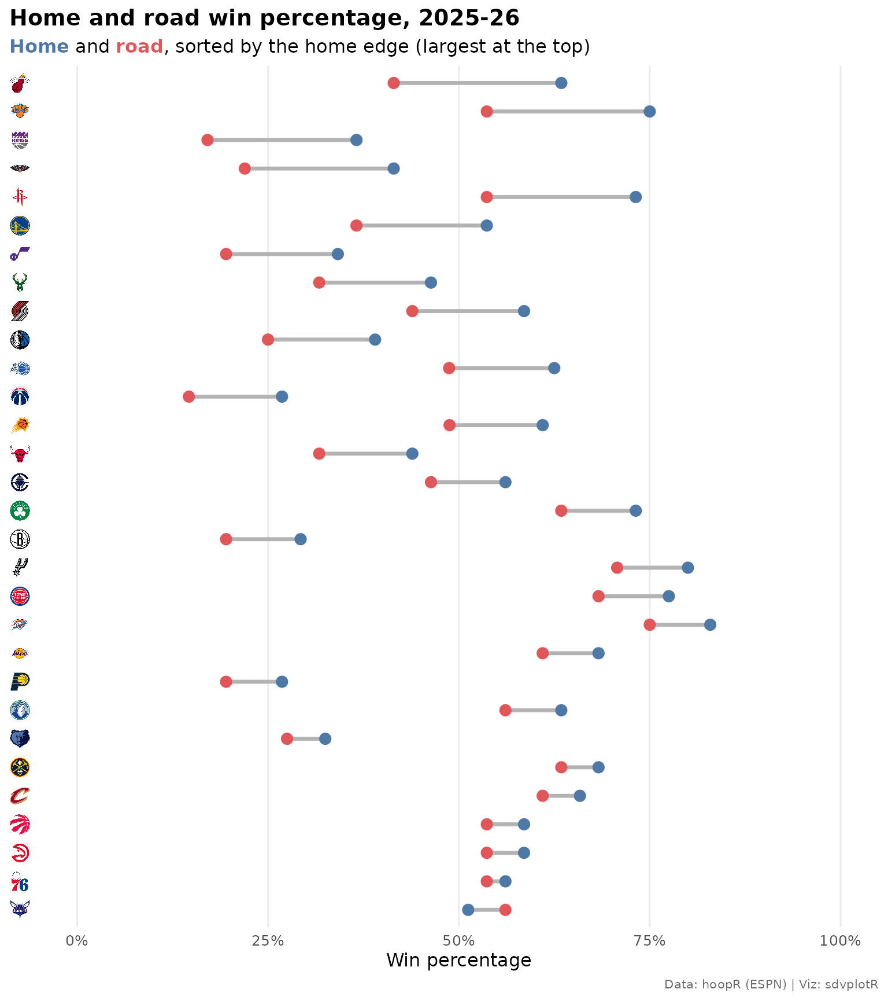

On this page
Ten charts and tables from the 2025-26 NBA regular season: an
offense-vs-defense quadrant and net-rating bars with logos, a conference
bump chart, a scoring leaderboard with headshots, a shot chart on a
team-colored court, tiers, a standings table, faceted logos, a home/road
dumbbell and a table of category leaders. Every number comes from hoopR’s ESPN release files
on GitHub (load_nba_*()), so nothing here calls
stats.nba.com.
Setup
library(sdvplotR)
library(ggplot2)
library(dplyr)
library(tidyr)
library(gt)
season <- 2026 # the 2025-26 season: hoopR names a season by the year it ends
label <- "2025-26"
source_note <- "Data: hoopR (ESPN) | Viz: sdvplotR"
theme_set(
theme_minimal(base_size = 12) +
theme(
plot.title = element_text(face = "bold"),
plot.title.position = "plot",
plot.caption = element_text(color = "grey40", size = 8),
plot.caption.position = "plot",
panel.grid.minor = element_blank()
)
)The team box score has one row per team per game.
season_type 2 is the regular season (3 is the playoffs, 5
the play-in). ESPN files the All-Star games as regular-season games too,
between teams that aren’t NBA clubs, so an inner join on the ESPN team
id to team_reference("nba") drops them and adds each team’s
sdvplotR abbreviation and conference in the same step.
nba_teams <- team_reference("nba") |>
select(team_id = espn_team_id, team = team_abbr, conference)
box <- hoopR::load_nba_team_box(seasons = season) |>
filter(season_type == 2) |>
inner_join(nba_teams, by = "team_id")
box |>
distinct(game_id) |>
nrow()
#> [1] 1231That is one more than the 1,230 games of the schedule: the NBA Cup final between New York and San Antonio is filed as a regular-season game too. It stays in the box scores (it was played) but not in the standings, so those two teams show 83 games here.
1. Offense vs defense, with logos
Points scored and allowed per 100 possessions put all 30 teams on one
chart. Possessions are estimated from the box score (FGA - OREB + TOV +
0.44 x FTA) and averaged with the opponent’s estimate for the same game.
One Chicago game is missing its team turnovers, so
total_turnovers falls back to the players’
turnovers there; without that, Chicago and its opponent
that night, Orlando, would drop out of every chart below. The last line
stops the build if a team ever goes missing.
games <- box |>
mutate(
poss = field_goals_attempted - offensive_rebounds +
coalesce(total_turnovers, turnovers) + 0.44 * free_throws_attempted
)
games <- games |>
inner_join(
games |> select(game_id, opponent_team_id = team_id, opp_poss = poss),
by = c("game_id", "opponent_team_id")
) |>
mutate(game_poss = (poss + opp_poss) / 2)
ratings <- games |>
group_by(team, conference) |>
summarise(
games = n(),
wins = sum(team_winner),
pace = mean(game_poss),
ortg = 100 * sum(team_score) / sum(game_poss),
drtg = 100 * sum(opponent_team_score) / sum(game_poss),
fg3a_rate = sum(three_point_field_goals_attempted) / sum(field_goals_attempted),
fg3_pct = sum(three_point_field_goals_made) / sum(three_point_field_goals_attempted),
.groups = "drop"
) |>
mutate(net = ortg - drtg) |>
arrange(desc(net), team)
stopifnot(nrow(ratings) == 30, !anyNA(ratings$net))
ratings |>
select(team, conference, wins, ortg, drtg, net) |>
head(5)
#> # A tibble: 5 × 6
#> team conference wins ortg drtg net
#> <chr> <chr> <int> <dbl> <dbl> <dbl>
#> 1 OKC Western 64 116. 105. 10.9
#> 2 DET Eastern 60 114. 106. 7.93
#> 3 SA Western 62 117. 109. 7.86
#> 4 BOS Eastern 56 117. 109. 7.85
#> 5 NY Eastern 54 117. 110. 6.40Defensive rating is points allowed, so its axis is reversed: good defenses sit at the top and the best teams in the top-right corner.
x_lim <- range(ratings$ortg) + c(-1.5, 1.5)
y_lim <- range(ratings$drtg) + c(-2, 1.5)
ggplot(ratings, aes(ortg, drtg)) +
geom_mean_lines(
aes(x0 = ortg, y0 = drtg),
color = "grey60", linetype = "dashed", linewidth = 0.4
) +
geom_sdv_logos(aes(team = team), sport = "nba", width = 0.065) +
annotate(
"text",
x = x_lim[c(2, 1, 2, 1)], y = y_lim[c(1, 1, 2, 2)],
hjust = c(1, 0, 1, 0), vjust = c(1.3, 1.3, -0.4, -0.4),
label = c("Good offense, good defense", "Defense first", "Offense first", "Struggling"),
color = "grey45", fontface = "italic", size = 3.5
) +
scale_x_continuous(expand = expansion(0)) +
scale_y_reverse(expand = expansion(0)) +
expand_limits(x = x_lim, y = y_lim) +
labs(
title = paste("NBA offense vs defense,", label, "regular season"),
x = "Offensive rating (points per 100 possessions)",
y = "Defensive rating (points allowed per 100)",
caption = source_note
)
2. Net rating, ranked, with logos on the axis
scale_x_sdv() turns a discrete axis of team
abbreviations into logos, and theme_x_sdv() lets the axis
draw them. Order the factor first: the bars keep that order and so do
the logos.
ratings |>
mutate(team = factor(team, levels = team)) |>
ggplot(aes(team, net, fill = team)) +
geom_col(width = 0.75) +
geom_hline(yintercept = 0, linewidth = 0.4) +
scale_fill_sdv(sport = "nba") +
scale_x_sdv(sport = "nba", size = 16) +
labs(
title = paste("NBA net rating,", label, "regular season"),
x = NULL,
y = "Net rating (per 100 possessions)",
caption = source_note
) +
theme_x_sdv() +
theme(legend.position = "none", panel.grid.major.x = element_blank())
3. The race in the West, as a bump chart
Rank each team inside its conference by win percentage at the end of every week, then draw one line per team in its color with its logo at the finish. Ties are broken by point differential, then by abbreviation, not by the NBA’s tiebreakers, so the same data always draw the same chart.
weekly <- box |>
mutate(
week = as.Date(cut(game_date, "week", start.on.monday = TRUE)),
margin = team_score - opponent_team_score
) |>
group_by(team, conference, week) |>
summarise(wins = sum(team_winner), games = n(), margin = sum(margin), .groups = "drop") |>
complete(nesting(team, conference), week, fill = list(wins = 0, games = 0, margin = 0)) |>
arrange(team, week) |>
group_by(team) |>
mutate(across(c(wins, games, margin), cumsum)) |>
ungroup() |>
mutate(week_no = dense_rank(week)) |>
filter(week_no >= 3) |> # the first two weeks hold only a game or two
arrange(conference, week_no, desc(wins / games), desc(margin), team) |>
group_by(conference, week_no) |>
mutate(rank = row_number()) |>
ungroup()
west <- filter(weekly, conference == "Western")
finish <- filter(west, week_no == max(week_no))
ggplot(west, aes(week_no, rank)) +
geom_line(aes(color = team), linewidth = 1.1, alpha = 0.85) +
# the logos get no color aesthetic: a colour would tint the whole image
geom_sdv_logos(aes(x = week_no + 1, team = team), data = finish, sport = "nba", width = 0.04) +
scale_color_sdv(sport = "nba") +
scale_y_reverse(breaks = 1:15) +
scale_x_continuous(breaks = seq(5, 30, 5), expand = expansion(add = c(0.5, 1.5))) +
labs(
title = paste("The race in the West,", label),
subtitle = "Conference rank by win percentage at the end of each week",
x = "Week of the season",
y = "Western Conference rank",
caption = source_note
) +
theme(legend.position = "none", panel.grid.major.x = element_blank())
Swap "Western" for "Eastern" to draw the
other conference from the same weekly frame.
4. A scoring leaderboard with headshots
The player box score carries ESPN athlete ids, which is what
geom_sdv_headshots() takes for the NBA. Only games in
box count, so the All-Star games stay out, and a player’s
team is the one he played for last.
players <- hoopR::load_nba_player_box(seasons = season) |>
semi_join(distinct(box, game_id), by = "game_id") |>
filter(!did_not_play)
per_game <- players |>
arrange(game_date) |>
group_by(athlete_id, athlete_display_name) |>
summarise(
games = n(),
team = last(team_abbreviation),
across(
c(points, rebounds, assists, steals, blocks, three_point_field_goals_made),
mean
),
.groups = "drop"
) |>
filter(games >= 50)
scorers <- per_game |>
arrange(desc(points), athlete_id) |>
head(10) |>
mutate(athlete_display_name = factor(athlete_display_name, levels = rev(athlete_display_name)))
ggplot(scorers, aes(points, athlete_display_name)) +
geom_col(aes(fill = team), width = 0.7) +
geom_sdv_logos(aes(x = points + 1.6, team = team), sport = "nba", height = 0.07) +
geom_sdv_headshots(aes(x = points + 4.6, player_id = athlete_id), sport = "nba", height = 0.09) +
geom_text(aes(x = points + 7.4, label = sprintf("%.1f", points)), fontface = "bold", hjust = 0) +
scale_fill_sdv(sport = "nba") +
scale_x_continuous(limits = c(0, max(scorers$points) + 10), expand = expansion(0)) +
labs(
title = paste("NBA scoring leaders,", label),
subtitle = "Points per game, 50 or more games",
x = "Points per game",
y = NULL,
caption = source_note
) +
theme(legend.position = "none", panel.grid.major.y = element_blank())
These are ESPN athlete ids. stats.nba.com numbers players differently
(PERSON_ID), and the two can’t be told apart by shape: an
NBA Stats id read as an ESPN id draws someone else or nothing. For data
keyed by NBA Stats ids, pass id_type = "league" to draw
from the NBA’s own image CDN:
geom_sdv_headshots(aes(player_id = person_id), sport = "nba", id_type = "league")That CDN refuses requests from datacenter IPs, this site’s build
server among them, so the articles here use ESPN ids.
id_type works the same in gt_sdv_headshots(),
reactable_sdv_headshots() and the headshot axis scales.
5. A shot chart on a team-colored court
load_nba_shots() holds ESPN’s shot locations. hoopR
already converts them to feet on a center-court frame
(coordinate_x from -47 to 47 along the court,
coordinate_y from -25 to 25 across it), which is the frame
sdv_surface()’s sportyR court uses, so they plot as they
are. sdv_court_coords() is not needed here: it is for the
stats.nba.com legacy frame (x_legacy/y_legacy
from hoopR::load_nba_stats_shots(), tenths of a foot around
the hoop). Shots at the right basket are rotated onto the left one so a
half court holds them all; free throws are left out.
star <- scorers |>
slice_max(points, n = 1, with_ties = FALSE)
shots <- hoopR::load_nba_shots(seasons = season) |>
semi_join(distinct(box, game_id), by = "game_id") |>
filter(athlete_id_1 == star$athlete_id, !grepl("Free Throw", type_text)) |>
mutate(
right = coordinate_x > 0,
x = if_else(right, -coordinate_x, coordinate_x),
y = if_else(right, -coordinate_y, coordinate_y),
result = if_else(scoring_play, "Made", "Missed")
)
made_color <- sdv_team_colors(star$team, sport = "nba", type = "secondary")
sdv_surface("nba", star$team, display_range = "defense") +
geom_point(
aes(x, y),
data = filter(shots, result == "Missed"),
shape = 4, color = "grey25", size = 1.4, alpha = 0.6
) +
geom_point(
aes(x, y),
data = filter(shots, result == "Made"),
shape = 21, fill = made_color, color = "black", stroke = 0.3, size = 1.8
) +
labs(
title = paste0(star$athlete_display_name, ": every field goal attempt, ", label),
subtitle = sprintf(
"%d made (filled), %d missed (crosses): %.1f%% from the field",
sum(shots$scoring_play), sum(!shots$scoring_play), 100 * mean(shots$scoring_play)
),
caption = source_note
) +
theme(plot.title = element_text(face = "bold"))
6. Team tiers from net rating
sdv_team_tiers() draws a tier list from a frame with
tier_no and team. Here the tiers are cut from
the net ratings above, best team first in each tier, so the list is the
season’s numbers rather than an opinion.
tiers <- ratings |>
mutate(
# bins from worst to best, so the best bin (6 or better) becomes tier 1
tier_no = 6L - cut(net, c(-Inf, -6, -2, 2, 6, Inf), labels = FALSE, right = FALSE)
) |>
arrange(tier_no, desc(net)) |>
select(tier_no, team)
sdv_team_tiers(
tiers,
sport = "nba",
title = paste("NBA tiers by net rating,", label),
subtitle = "Regular-season net rating per 100 possessions, cut at +6, +2, -2 and -6",
caption = source_note,
tier_desc = c(
"1" = "Contenders",
"2" = "Playoff teams",
"3" = "The middle",
"4" = "Lottery",
"5" = "Rebuilding"
)
)
7. A conference standings table with logos and cut lines
ESPN’s standings come long, one row per team and stat, so pivot them
wide. gt_sdv_logos() turns the abbreviation column into
logos and gt_cutline() marks the playoff and play-in lines:
seeds 1-6 make the playoffs, 7-10 the play-in.
standings <- hoopR::load_nba_standings(seasons = season) |>
select(group_name, team_abbreviation, team_short_display_name, stat_name, display_value) |>
pivot_wider(names_from = stat_name, values_from = display_value)
standings |>
filter(group_name == "Eastern Conference") |>
mutate(seed = as.integer(playoffSeed), logo = team_abbreviation) |>
arrange(seed) |>
select(
seed, logo, team_short_display_name, wins, losses, winPercent, gamesBehind,
Home, Road, `Last Ten Games`, differential
) |>
gt() |>
tab_header(
title = paste("Eastern Conference standings,", label),
subtitle = "Seeds 1-6 make the playoffs; 7-10 the play-in"
) |>
cols_label(
seed = "", logo = "", team_short_display_name = "Team", wins = "W", losses = "L",
winPercent = "Pct", gamesBehind = "GB", `Last Ten Games` = "L10",
differential = "Diff"
) |>
tab_source_note(source_note) |>
gt_sdv_logos(columns = logo, sport = "nba", height = 26) |>
gt_theme_athletic() |>
cols_align("left", columns = team_short_display_name) |>
gt_cutline(after = c(6, 10), label = c("Playoffs", "Play-in"), label_position = "above")| Eastern Conference standings, 2025-26 | ||||||||||
| Seeds 1-6 make the playoffs; 7-10 the play-in | ||||||||||
| Team | W | L | Pct | GB | Home | Road | L10 | Diff | ||
|---|---|---|---|---|---|---|---|---|---|---|
| 1 |  |
Pistons | 60 | 22 | .732 | - | 31-9 | 28-13 | 8-2 | +8.2 |
| 2 |  |
Celtics | 56 | 26 | .683 | 4 | 30-11 | 26-15 | 8-2 | +7.7 |
| 3 |  |
Knicks | 53 | 29 | .646 | 7 | 30-10 | 22-19 | 6-4 | +6.4 |
| 4 |  |
Cavaliers | 52 | 30 | .634 | 8 | 27-14 | 25-16 | 7-3 | +4.1 |
| 5 |  |
Raptors | 46 | 36 | .561 | 14 | 24-17 | 22-19 | 6-4 | +2.8 |
| 6 |  |
Hawks | 46 | 36 | .561 | 14 | 24-17 | 22-19 | 6-4 | +2.5 |
| 7 |  |
76ers | 45 | 37 | .549 | 15 | 23-18 | 22-19 | 6-4 | -0.2 |
| 8 |  |
Magic | 45 | 37 | .549 | 15 | 25-15 | 19-20 | 7-3 | +0.6 |
| 9 |  |
Hornets | 44 | 38 | .537 | 16 | 21-20 | 23-18 | 6-4 | +4.8 |
| 10 |  |
Heat | 43 | 39 | .524 | 17 | 26-15 | 17-24 | 5-5 | +2.4 |
| 11 |  |
Bucks | 32 | 50 | .390 | 28 | 19-22 | 13-28 | 3-7 | -6.2 |
| 12 |  |
Bulls | 31 | 51 | .378 | 29 | 18-23 | 13-28 | 2-8 | -5.2 |
| 13 |  |
Nets | 20 | 62 | .244 | 40 | 12-29 | 8-33 | 3-7 | -10.0 |
| 14 |  |
Pacers | 19 | 63 | .232 | 41 | 11-30 | 8-33 | 3-7 | -8.0 |
| 15 |  |
Wizards | 17 | 65 | .207 | 43 | 11-30 | 6-35 | 0-10 | -12.0 |
| Data: hoopR (ESPN) | Viz: sdvplotR | ||||||||||
8. Logos faceted by conference
geom_sdv_logos() is a ggplot2 layer, so it facets like
any other geom, and geom_mean_lines() draws each panel’s
own averages. How often teams shoot threes against how well they make
them, East vs West:
ggplot(ratings, aes(fg3a_rate, fg3_pct)) +
geom_mean_lines(aes(x0 = fg3a_rate, y0 = fg3_pct), color = "grey60", linewidth = 0.4) +
geom_sdv_logos(aes(team = team), sport = "nba", width = 0.09) +
facet_wrap(~conference, labeller = labeller(conference = function(x) paste(x, "Conference"))) +
scale_x_continuous(labels = scales::percent, expand = expansion(mult = 0.12)) +
scale_y_continuous(labels = scales::percent_format(accuracy = 0.1), expand = expansion(mult = 0.12)) +
labs(
title = paste("Three-point volume vs accuracy,", label),
x = "Share of field goal attempts from three",
y = "Three-point percentage",
caption = source_note
) +
theme(strip.text = element_text(face = "bold", size = 11))
9. Home and road, as a dumbbell with logos on the axis
Home and road records come from the same standings, as strings like
"29-12". One row per team, sorted by the gap between them;
scale_y_sdv() and theme_y_sdv() put the logos
on the vertical axis.
win_pct <- function(record) {
parts <- strsplit(record, "-", fixed = TRUE)
vapply(parts, function(p) as.numeric(p[1]) / sum(as.numeric(p)), numeric(1))
}
home_road <- standings |>
transmute(team = team_abbreviation, home = win_pct(Home), road = win_pct(Road)) |>
mutate(edge = home - road) |>
arrange(edge, team) |>
mutate(team = factor(team, levels = team))
ggplot(home_road, aes(y = team)) +
geom_segment(aes(x = road, xend = home, yend = team), color = "grey70", linewidth = 1.2) +
geom_point(aes(x = road), color = "#E15759", size = 3) +
geom_point(aes(x = home), color = "#4E79A7", size = 3) +
scale_y_sdv(sport = "nba", size = 14) +
scale_x_continuous(labels = scales::percent, limits = c(0, 1)) +
labs(
title = paste("Home and road win percentage,", label),
subtitle = "<span style='color:#4E79A7'>**Home**</span> and <span style='color:#E15759'>**road**</span>, sorted by the home edge (largest at the top)",
x = "Win percentage",
y = NULL,
caption = source_note
) +
theme_y_sdv() +
theme(plot.subtitle = ggtext::element_markdown(), panel.grid.major.y = element_blank())
10. Category leaders in a headshot table
gt_sdv_headshots() turns a column of ESPN athlete ids
into headshots and gt_sdv_logos() a column of abbreviations
into logos. One row per category: the per-game leader among players with
50 or more games.
categories <- c(
points = "Points", rebounds = "Rebounds", assists = "Assists",
steals = "Steals", blocks = "Blocks", three_point_field_goals_made = "3-pointers made"
)
per_game |>
pivot_longer(names(categories), names_to = "stat", values_to = "value") |>
arrange(desc(value), athlete_id) |>
group_by(stat) |>
slice(1) |>
ungroup() |>
arrange(match(stat, names(categories))) |>
transmute(
category = categories[stat],
headshot = athlete_id,
player = athlete_display_name,
logo = team,
value,
games
) |>
gt() |>
tab_header(
title = paste("NBA per-game leaders,", label),
subtitle = "Regular season, 50 or more games"
) |>
cols_label(category = "", headshot = "", player = "Player", logo = "Team", value = "Per game", games = "GP") |>
fmt_number(value, decimals = 1) |>
tab_source_note(source_note) |>
gt_sdv_headshots(columns = headshot, sport = "nba", height = 44) |>
gt_sdv_logos(columns = logo, sport = "nba", height = 28) |>
gt_theme_sdv()| NBA per-game leaders, 2025-26 | |||||
| Regular season, 50 or more games | |||||
| Player | Team | Per game | GP | ||
|---|---|---|---|---|---|
| Points |  |
Luka Doncic |  |
33.5 | 64 |
| Rebounds |  |
Nikola Jokic |  |
12.9 | 65 |
| Assists | |
Nikola Jokic | |
10.7 | 65 |
| Steals |  |
Ausar Thompson | |
2.0 | 73 |
| Blocks |  |
Victor Wembanyama |  |
3.1 | 65 |
| 3-pointers made | |
Luka Doncic | |
4.0 | 64 |
| Data: hoopR (ESPN) | Viz: sdvplotR | |||||